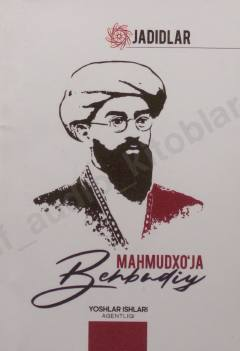

JMMahmudxo'ja Behbudiyning hayoti va jadidchilik harakatidagi faoliyatiga bag'ishlangan ilmiy-ommabop risola.
Ushbu risola jadidchilik harakatining yirik namoyandasi Mahmudxo'ja Behbudiyning hayot yo'li va faoliyatiga bag'ishlangan. Kitobda ma'rifatparvarning pedagogika, jurnalistika va siyosatdagi o'rni hamda uning ijodiy merosi tahlil qilinadi.